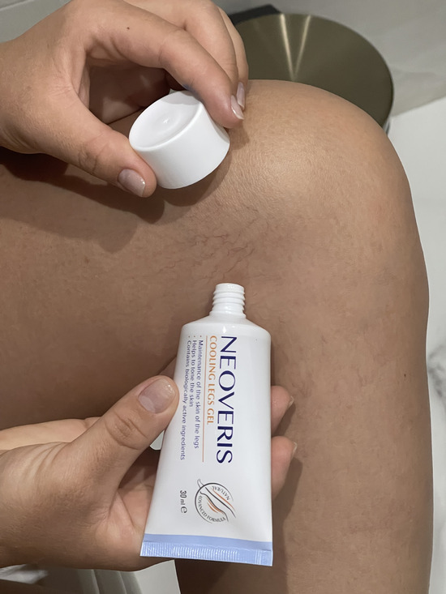
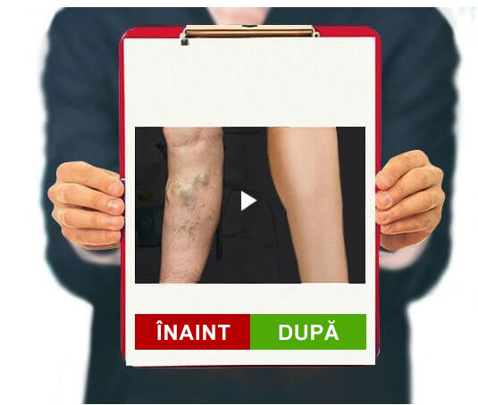
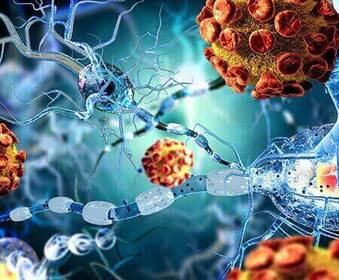
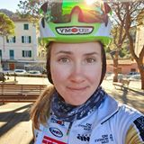

Tratează-ți picioarele cu atenție și
spune "nu" varicelor
TESTARE
INDEPENDENTĂ
Bună ziua tuturor! Fetelor, v-ați prins vreodată cu gândul că vă pare
rău pentru femeile de peste 40 de ani care abia merg pe lângă trotuar și îi sperie
pe toți cu picioarele albastre? Mi-e de două ori frică să mă uit la ele, pentru că
știu direct că viața cu varice este chinuitoare! De aceea vreau să vă împărtășesc
cum puteți scăpa de varice odată pentru totdeauna.
Pentru început, vestea proastă este că varicele sunt cel mai adesea
ereditare, iar dacă cineva din familie o are, atunci ești în pericol. Acum vestea
bună: știu cum să scăpați de ei.
Așa arătau coapsele mele când aveam 14 ani. Da, când eram adolescent, am
început să observ că picioarele mele "devin albastre" rapid. Aceste ochiuri
vasculare teribile și curbe albastre ale venelor dilatate. Îmi era rușine de
picioarele mele zvelte, atletice, ascunzându-le sub blugi. Mama a spus că este
hormonal și va trece în curând. Dar în fiecare an plasa vasculară devene din ce în
ce mai mare până când a acoperit toate coapsele.
Mulți oameni cred că varicele - doar o problemă
estetică și, prin urmare, nu fac nimic pentru a opri progresia bolii,
ascunzând în schimb zonele afectate ale corpului sub haine.
Tromboză Vase de sânge dilatate și se
arată clar sub piele
Deteriorarea suprafeței
pielii provoacă sângerări severe
Ulcerul trofic apare din cauza problemelor
legate de circulația sângelui și tulburările de nutriție tisulară.
Dar dacă ar fi numai asta! Noaptea mă dureau picioarele, erau amorțite,
umflate și fierbinți. Și așa zi de zi... Am încercat să ușurez situația cât de bine
am putut. În fiecare zi făceam băi de picioare, luam venotonici, foloseam creme
speciale, purtam ciorapi de compresie. Dar nimic nu m-a ajutat. Nu-mi plăcea să mă
uit la picioarele mele. Venele mele deveneau tot mai mari pe zi ce trece.
După o mulțime de încercări nereușite de a face față varicelor, mi-am
pierdut complet speranța. Dar decizia a venit de unde nu mă așteptam.
-
O SOLUȚIE MODERNĂ
Majoritatea produselor de astăzi pot elimina doar simptomele
varicelor, pot elimina umflarea și pot ameliora durerea.
SPRE
DEOSEBIRE DE ELE,ARE O GAMĂ LARGĂ DE
ACȚIUNI
1. Contribuie
la ameliorarea inflamației vasculare și la eliminarea simptomelor
concomitente.
2. Contribuie
la stimularea circulației sângelui și întărește pereții vaselor de
sânge.
Eram în vacanță și i-am cerut noului manager să aducă un raport de la
birou la mine acasă. Mi-a observat accidental picioarele sub halat și a spus că acum
o lună a cumpărat un gel pentru mama sa îmotriva venelor varicoase, care au ajutat-o în
doar 4 săptămâni. De asemenea, am decis să încerc acest gel și l-am comandat online.
Comanda a sosit destul de repede, în doar 2 zile.
Datorită texturii sale, gelul este foarte delicat și are o aromă
plăcută. Este destul de plăcut, se aplică bine pe piele. În cele din urmă, gelul se
absoarbe în 5 minute, fără a lăsa lipicioasă și fără a forma o peliculă neplăcută.
Am aplicat
dimineața și seara. Se cheltuiește cu moderație, un strat subțire este suficient
pentru a obține efectul.
Și are într-adevăr efect. Primul sentiment este că oboseala și greutatea
picioarelor dispar aproape imediat, acest efect este dat de extractul Centella
asiatica. Umflarea dispare literalmente în fața ochilor noștri. Aveți o senzație de
prospețime, picioarele devin mai ușoare datorită prezenței castanului de cal.

Nu mă veți crede, dar a doua zi am simțit o ușurință plăcută, picioarele
mele nu s-au umflat până seara. Anterior, la locul de muncă, gleznele se umflau
instantaneu, iar acum nici venele nu sunt atât de umflate. Am continuat să folosesc
gelul în fiecare zi. Și știți ce? După câteva săptămâni, am uitat de durerea din
picioare, iar rețeaua vasculară a început să se face de culoare mai deschisă. O lună
mai târziu, nu mi-am recunoscut picioarele. Practic nu a mai rămas nimic din venele
umflate. Iar plasa roșie și albastră de pe șolduri părea să nu mai existe. Nu mă
așteptam la un astfel de rezultat. s-a dovedit a fi o soluție foarte bună și, cel
mai important, o soluție ieftină.
EFECTUL EVIDENT AL
1.Ajută la îmbunătățirea
stării vaselor de sânge și fluxul de sânge. afectează
microcirculația în organism, ajută la întărirea capilarelor și la
reducerea permeabilității acestora.
2.Ajută la ameliorarea
inflamației pereților vaselor de sânge, vasele devin
mult mai puțin vizibile sub piele. Datorită acestui fapt,
se restabilește circulația sângelui și, astfel, se stimulează
activitatea inimii, creierului și intestinelor.

ÎnainteDupă
Extractele naturale din gel ajută la îmbunătățirea circulației sângelui.
Astfel, gelul nu numai că ajută la eliminarea cianozei venelor, dar ajută și la
prevenirea apariției unei probleme în viitor. Într-o lună de utilizare a gelului și
am scăpat de toate semnele de vene varicoase. Nu pot exprima în cuvinte cât de
fericită sunt că îmi pot admira picioarele subțiri și frumoase. Este un sentiment de
nedescris! Pur și simplu evaluați singuri diferența:
În sfârșit am încetat să-mi ascund picioarele sub fuste lungi și
pantaloni și sunt fericită să port mini. Și dacă sunteți familiarizați cu senzația
de greutate în picioare, umflături, vene teribile și nu mai știți cum să scăpați de
ele, încercați . Este ca
ciorapii corectori, doar că mai bine. Restaurați-vă picioarele cu atenție și ele cu
siguranță vă vor spune "mulțumesc".
EFECTUL , PAS
CU PAS:
1.
ÎMBUNĂTĂȚIREA CIRCULAȚIEI SÂNGELUI
Dezvoltarea venelor varicoase este
însoțită de o încălcare a circulației sângelui, ceea ce duce la
formarea cheagurilor de sânge. Practic, circulația sângelui se mișcă
de jos în sus, de la picioare la piept. Odată cu stagnarea, cea mai
mare parte a sângelui rămâne în extremitățile inferioare.
ajută la normalizarea circulației sângelui, la prevenirea formării
cheagurilor de sânge și la asigurarea nutriției vasculare.
În bolile vasculare, celulele stratului
interior al vaselor slăbesc, pereții se subțiază.
Componentele gelului ajută la întărirea
stratului endotelial și fac vasele mai stabile și mai elastice.
Gelul are un efect pozitiv asupra pereților venelor.
3.
ELIMINAREA DURERII ȘI DISCONFORTULUI
Edemul și inflamația venelor, în care
sângele stagnează și cheagurile trombotice, provoacă, fără îndoială,
disconfort și perturbă calitatea vieții.
Gelul nu numai că afectează cauzele
durerii, care are un efect pozitiv pe termen lung, dar aduce și
ușurare, datorită conținutului de extracte de castan, centella,
ruscus.

Comentarii 10
Maria
Acesta este rezultat! Nu m-aș fi gândit niciodată că un singur gel
ar putea transforma atât de mult picioarele. 😊
Raluca
De asemenea, am vene varicoase foarte puternice, voi comanda și
acest gel, sper că vă va ajuta!
Cristina
Lucrez ca chelneriță într-o cafenea. Nu mă așez toată ziua, altfel
voi fi amendă imediat. În timpul schimbării, picioarele se umflă și dor. Și apoi apar
noduri... La început, ca toți ceilalți, am cumpărat diverse creme, pastile și ierburi pentru
băi de la farmacie privată. Dar nimic nu a ajutat. Curând am aflat despre . Este accesibil și mult mai eficient
decât orice am încercat. Nu cred că aș fi putut să mă țin de această slujbă mult timp dacă
nu ar fi fost acest gel. Picioarele mele se simțeau ca plumb, dar acum nu sunt deloc
obosită. Diferența este mai mult decât vizibilă!
Carolina
Este într-adevăr un gel atât de eficient? Nici nu-mi vine să cred...
Doina
Nici eu nu am crezut până nu am încercat. Acum 3 ani am avut
probleme cu picioarele: umflături, vene umflate, arsuri și greutate. Am încercat lucruri
diferite, am crezut că nimic nu va ajuta. Dar, recent, specialistul mi-a sfătuit o noutate,
a spus că ar trebui să ajute. Și
într-o lună m-a scăpat de toate problemele mele. Greutatea, umflarea și venele albastre
proeminente au dispărut. Îl recomand!
Sămărica
Ce rezultat! ar trebui să încercați și voi
Veronica
Am aflat despre acest gel de la o prietenă, dar nu a ajutat-o. A
comandat-o de la un magazin online.

Antonia
Știți, probabil că tocmai ați comandat un gel fals. Eu însumi sufăr
de varice de mult timp și serios, cu noduli, vene umflate, iar când am început să sufăr de
umflarea picioarelor, am încercat acest gel! De atunci a fost însoțitorul meu constant. Pe
drum și acasă. Ajută într-adevăr repede. Așa că recomand originalul , arată așa.
Elena
Mulțumesc mult pentru comentarii. Venele mă deranjează de mulți ani,
cu siguranță voi încerca acest gel.
Nicoleta
20.12.2022
Eu folosesc
doar o săptămână și picioarele se umflă mai puțin în timpul zilei, au încetat să mai doară
la mers. Chiar și plasa vaselor a devenit mai puțin vizibilă. Sper să uit în curând și
despre vene varicoase, ca un vis teribil.


Comentarii 10
PICIOARELE FRUMOASE SUNT ACUM O REALITATE